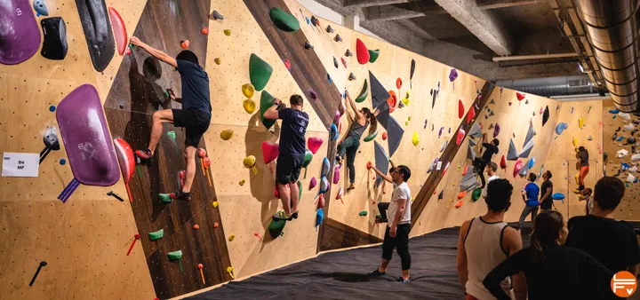

Comment choisir les chaussures d'escalade adaptées à votre style de grimpe ?
L'Utilité des Chaussures d'Escalade Les chaussures d'escalade sont essentielles pour garantir une bonne adhérence sur les prises, ce qui est crucial pour votre sécurité. Elles sont conçues pour offrir un soutien optimal et un maximum de contact avec la surface, permettant ainsi de grimper efficacement. Pour les débutants, le confort est primordial. Il est conseillé de choisir des chaussures qui ne soient pas trop serrées au début, car cela peut entraîner des douleurs et des blessures. Un modèle bien ajusté doit envelopper le pied sans être douloureux. Avec le temps, vous pourrez opter pour des chaussures plus ajustées pour une meilleure précision. Prévention des Blessures Pour prévenir les blessures, il est important de bien choisir ses chaussures et d'éviter de grimper avec des modèles inadaptés ou usés. Écoutez votre corps : si vous ressentez une douleur persistante, il est préférable de faire une pause et de vérifier l'ajustement de votre équipement.
Comment faire un nœud de huit ou nœud d'encordement ?
Le Nœud de Huit en Escalade Lorsque vous débutez en escalade, l'une des premières compétences à apprendre est le nœud de huit. Ce nœud est essentiel pour votre sécurité et sera utilisé à de nombreuses reprises. Réputé pour sa simplicité et sa fiabilité, il maintient la résistance de la corde. Voici comment le réaliser en six étapes :
- Préparez la corde - Prenez un bout de corde d'environ un mètre.
- Faites une boucle - Pliez la corde pour former une grande boucle.
- Passez la corde - Faites passer l'extrémité de la corde par-dessus et en dessous de la boucle.
- Enroulez la corde - Enroulez l'extrémité autour de la grande boucle et faites-la passer sous puis à travers.
- Passez la corde à travers - Faites passer l'extrémité de la corde à travers les deux boucles intérieures.
- Serrez le nœud - Assurez-vous que l'extrémité de la corde mesure au moins quinze centimètres. Serrez le nœud en tirant sur les quatre brins.
Conseils pour l'Escalade de Bloc en Salle
L'escalade de bloc en salle combine force, technique et créativité. Voici quelques erreurs fréquentes à éviter pour progresser et grimper en toute sécurité :
- Sauter l'échauffement : Préparez vos muscles pour éviter les blessures.
- Négliger la magnésie : Elle améliore l'adhérence, pensez à en avoir assez.
- Ignorer l'analyse : Observez le parcours avant de commencer.
- Manquer de flexibilité : Travailler la souplesse aide à atteindre les prises difficiles.
- Forcer excessivement : Apprenez à doser l'effort, la technique est primordiale.
- Oublier la sécurité : Vérifiez les tapis et apprenez à chuter correctement.
- Répéter trop : Variez les parcours pour éviter la fatigue et progresser.
- Manque de créativité : Explorez des mouvements variés et des approches inédites.
- Mauvaise technique de pieds : Positionnez bien vos pieds pour gagner en efficacité.
- Être impatient : La patience est clé pour progresser en escalade de bloc.
En appliquant ces conseils, vous éviterez des erreurs courantes et optimiserez votre progression dans cette activité stimulante !
Conseils pour Bien Débuter en Escalade en Voie
Grimper en voie implique des ascensions plus longues, souvent à des hauteurs importantes. Il est donc crucial de bien maîtriser certaines techniques et d'avoir l'équipement nécessaire. Voici les étapes importantes pour une ascension en toute sécurité.
- Grimpez Toujours en Binôme
L'escalade en voie nécessite un partenaire pour assurer la sécurité. L'assureur joue un rôle clé pour gérer la corde et retenir le grimpeur en cas de chute. - Vérifiez l'Équipement Avant de Commencer
Assurez-vous que le baudrier est bien ajusté, que la corde est en bon état et que le système d’assurage est correctement installé. Faites un contrôle réciproque avec votre partenaire. - Maîtrisez les Techniques de Nœuds et d'Assurage
Avant de partir, assurez-vous de bien connaître le nœud d'encordement (nœud de huit) et les techniques d’assurage pour pouvoir réagir correctement aux situations imprévues. - Repérez les Points de Repos
Pendant une ascension longue, il est important d'identifier des prises et des positions pour se reposer. Cela permet de gérer son effort, surtout avant une section difficile. - Planifiez Vos Mouvements et Respirez
Contrairement au bloc, l'escalade en voie est plus endurante. Préparez vos mouvements en amont et respirez régulièrement pour mieux gérer l’effort. - Anticipez les Longs Mouvement et Travaux de Pieds
Utilisez les pieds pour alléger le poids supporté par les bras. La flexibilité et l’équilibre sont cruciaux pour atteindre les prises éloignées en voie. - Portez des Chaussons Confortables
Contrairement au bloc, l'escalade en voie nécessite souvent des chaussons confortables car les ascensions peuvent durer plus longtemps. Préférez des modèles offrant à la fois confort et précision. - Communiquez et Soyez Attentif
Maintenez une communication régulière avec votre partenaire. Signalez clairement vos intentions ("Prêt ?", "Grimpe !", etc.) pour éviter tout malentendu pendant l’ascension.